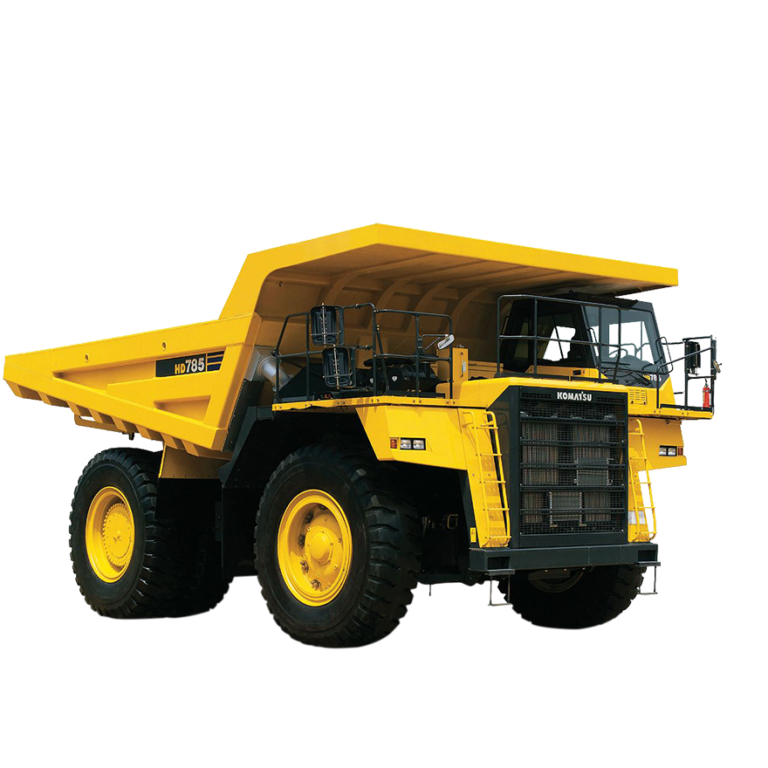
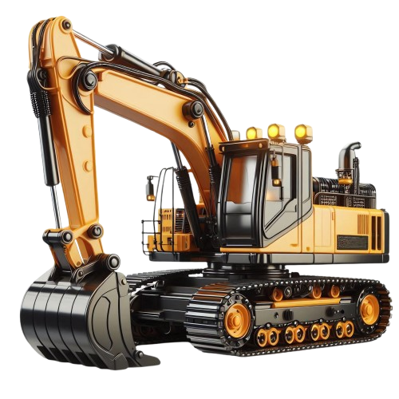
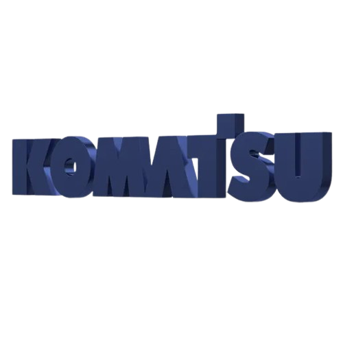
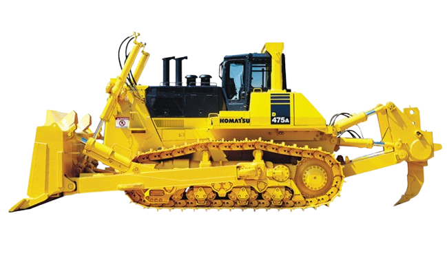

مدیریت عملیات
هدایت فعالیتهای فنی و عملیاتی، برنامهریزی منابع و پایش شاخصهای عملکرد ناوگان.
با بیش از ۱۵ سال تجربه در مدیریت ماشینآلات سنگین، نگهداری و تعمیرات و پروژههای صنعتی و معدنی؛ تمرکز من بر افزایش آمادهبهکاری ناوگان، بهبود بهرهوری و ایجاد ارزش عملیاتی پایدار است.


مهندس مکانیک با تمرکز بر مدیریت ناوگان و ماشینآلات معدنی، برنامهریزی تعمیرات، مدیریت قطعات و پشتیبانی فنی پروژههای بزرگ. تجربه فعالیت در محیطهای معدنی و صنعتی داخلی و پروژه بینالمللی، همراه با نگاه سیستمی به عملکرد تجهیزات و زنجیره تأمین قطعات.
هدایت فعالیتهای فنی و عملیاتی، برنامهریزی منابع و پایش شاخصهای عملکرد ناوگان.
برنامهریزی PM، CM و EM، تحلیل توقفات و بهکارگیری نتایج آنالیز روغن برای تصمیمگیری اصلاحی.
کدینگ فنی، ساختاردهی اطلاعات کالا، ردیابی بچنامبر، آدرسدهی انبار و بهینهسازی موجودی.
سرپرستی واحد کدینگ و ترجمه و اصلاح کدینگ بیش از ۳۷ هزار قلم کالا و قطعه برای هلدینگی با ۸ شرکت زیرمجموعه.
راهاندازی، تحویل و آموزش نیروی انسانی برای ۲۸ دستگاه ماشینآلات سنگین در پروژه معدن طلای بولیوار ونزوئلا.
تجربه مدیریت و پشتیبانی ناوگان ماشینآلات در پروژههای معدنی، عمرانی و صنعتی.
توسعه رویکردهای پایش وضعیت، آنالیز روغن، مدیریت قطعات و برنامهریزی تعمیرات برای بهبود آمادهبهکاری تجهیزات.
تجربه فنی و مدیریتی در گروههای اصلی ماشینآلات معدنی و راهسازی.

کدینگ قطعات، اطلاعات فنی و پشتیبانی ناوگان
سیستمهای هیدرولیک و پایش وضعیت
مدیریت ناوگان و برنامهریزی نگهداری

راهاندازی، سرویس و پشتیبانی عملیاتی
مدیریت کل ناوگان ماشینآلات هلدینگ و هدایت تیمهای فنی و عملیاتی؛ برنامهریزی تعمیرات و ارائه گزارشهای تحلیلی عملکرد.
نظارت بر ناوگان، اجرای برنامههای نگهداری پیشگیرانه، آنالیز روغن و مدیریت موجودی قطعات.
برنامهریزی عملیات تعمیر و نگهداری و پایش مستمر راندمان تجهیزات.
مدیریت عملیات فنی و ماشینآلات، تدوین برنامههای بلندمدت نگهداری، طراحی چیدمان انبار و مدیریت منابع انسانی.
تهیه گزارشهای فنی، مستندسازی تجهیزات و هماهنگی فعالیتها در پروژه سد خاکی ماشکید سراوان.
بهکارگیری استانداردهای ISO و ASTM، بازرسی جوش AWS-QC-1 و کنترل کیفیت تجهیزات.
اجرای برنامههای نگهداری دورهای و اضطراری و پایش عملکرد ماشینآلات سنگین.
در همکاری با شرکت اسپادانا، مسئولیت راهاندازی، تحویل و آموزش اپراتورها برای ۲۸ دستگاه ماشینآلات سنگین شامل لودر، بلدوزر، گریدر و دامپتراک را بر عهده داشتم. همچنین در جذب نیروی محلی و آموزش میدانی اصول بهرهبرداری و نگهداری مشارکت کردم.
دانشگاه آزاد اسلامی، واحد دورود | معدل ۱۷٫۶۰ از ۲۰
| عنوان دوره | مؤسسه | مدت |
|---|---|---|
| اصول نگهداری و تعمیرات | شرکت هسکو | ۸۰ ساعت |
| اصول مدیریت | دکتر مازیار میر | ۸۰ ساعت |
| بازرسی جوش AWS-QC-1 | انجمن جوشکاری و آزمایشهای غیرمخرب ایران | ۸۰ ساعت |
| تراشکاری و فرزکاری CNC | سازمان فنی و حرفهای خرمآباد | ۱۲۰۰ ساعت |
| پرس شلنگ هیدرولیک | شرکت متاکو | ۸۰ ساعت |
| سرویس و نگهداری عمومی ماشینآلات | شرکت یکران وزین آریا | ۲۰ ساعت |
| ایمنی ماشینآلات معدنی | مهندس حمیدرضا احراری | ۲۰ ساعت |
| مدیریت منابع انسانی | شرکت ایرانخودرو دیزل | ۲۰ ساعت |
| آنالیز روغن ماشینآلات و تجهیزات معدنی | شرکت فنی و مهندسی نوین نت پارس | ۲۰ ساعت |
| شناخت لاستیکهای معدنی | دکتر میقانی | ۲۰ ساعت |
برای فرصتهای مدیریتی، مشاوره فنی، همکاری پروژهای و بینالمللی در دسترس هستم.